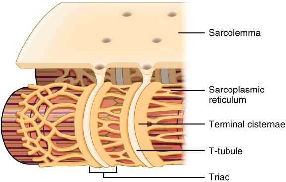

Cut across a steak and you see its grain: bundles inside bundles, held together by thin white sheets. Your own skeletal muscles are built the same way, and the pattern continues far below what your eye can see, down to protein filaments a few billionths of a meter wide. This page walks through skeletal muscle structure from the whole muscle to the sarcomere: the connective tissue wrappings, the muscle fiber and its membrane, the myofibrils, the bands of the sarcomere, the thick and thin filaments, and the network of tubes and sacs that carries each signal to the filaments.
From whole muscle to molecule
You met skeletal muscle tissue in the tissues chapter: long, striated, many-nucleated fibers that move your bones. A whole muscle is that tissue organized in levels, each one a bundle of the level below (Figure 1).
| Level | What it is | Typical size | Wrapped by |
|---|---|---|---|
| Whole muscle | An organ: many fascicles, with blood vessels and nerves | Centimeters to tens of centimeters long | Epimysium |
| Fascicle | A bundle of muscle fibers | About the thickness of a pencil lead or less; visible as the grain | Perimysium |
| Muscle fiber | One cell, with many nuclei | 10 to 100 µm wide; often several centimeters long | Endomysium (outside its sarcolemma) |
| Myofibril | A rod of protein filaments inside the fiber, not a cell | 1 to 2 µm wide; runs the length of the fiber | Sarcoplasmic reticulum (a network of sacs, not a wrapping) |
| Sarcomere | One repeating unit of a myofibril | About 2 to 2.5 µm long at rest | Nothing: sarcomeres are joined end to end |
| Filament | A strand of protein molecules: thick (myosin) or thin (actin) | Thick about 15 nm wide; thin about 7 nm wide | Nothing |
Two of those levels are easy to confuse, because both are long and thin and both run the length of the fiber. A muscle fiber is a whole cell, with a plasma membrane and nuclei. A myofibril is a structure inside that cell, one of hundreds or thousands of protein cylinders packed in its cytoplasm. Keep the rule in mind: fibers are cells; myofibrils are inside cells; filaments are inside myofibrils.
![Three enlargements, one below the other. At the top, a whole muscle tapering to a tendon is cut across to show its outer sheath of connective tissue and, inside it, many bundles of fibers, each bundle wrapped in its own layer. In the middle, one bundle is cut across to show the individual fibers, each wrapped in a thin layer, with blood vessels and nerve fibers running between them and a small flattened cell against one fiber. At the bottom, one fiber is cut across to show its outer membrane, nuclei at its edge, and many rod-like bundles packed inside, one of which is pulled out.](../figures/os-10-3.jpg)
The connective tissue wrappings
A skeletal muscle is held together by three layers of connective tissue, one for each level of bundling. Their names share the root mys- (muscle) and differ only in the prefix:
- The epimysium (epi- = upon) is a layer of dense irregular connective tissue around the whole muscle. It separates the muscle from its neighbors and lets it slide past them. Outside it lies the deep fascia you met with the skin, which groups muscles together.
- The perimysium (peri- = around) wraps each fascicle (Latin fasciculus, a little bundle), a bundle of about 10 to more than 100 muscle fibers. The larger blood vessels and nerves run into the muscle along the perimysium. The fascicles, separated by perimysium, are the grain you see in meat.
- The endomysium (endo- = within) is a thin layer of loose connective tissue, mostly fine reticular fibers, around each individual muscle fiber. It holds the capillaries that bring every fiber its oxygen and fuel, and the nerve fiber branches that reach each one.
The three layers are not separate bags. They are continuous with each other, and at the ends of the muscle they merge into the dense regular connective tissue of a tendon, or into a broad, flat sheet called an aponeurosis. The tendon's collagen fibers in turn run into the periosteum and the matrix of the bone. That continuity is what lets a muscle move a bone:
- Each fiber pulls on the endomysium around it.
- The endomysium passes the pull to the perimysium, and the perimysium to the epimysium.
- All three pull on the tendon, and the tendon pulls on the bone.
This is why a muscle can be injured where its fibers meet the tendon. A sudden hard pull, as in a sprint, concentrates force at that junction, and a tear there is a common muscle strain.
The muscle fiber: sarcolemma and sarcoplasm
Muscle fibers have their own names for ordinary cell parts, built on the Greek sarx, sarc- (flesh):
- The sarcolemma (-lemma = husk, sheath) is the plasma membrane of a muscle fiber. Like any plasma membrane, it keeps sodium high outside and potassium high inside, and it has a resting membrane potential, about −85 to −90 mV in skeletal muscle. It is excitable: it can fire action potentials.
- The sarcoplasm (-plasm = something formed) is the cytoplasm of a muscle fiber. It is crowded with myofibrils, which take up about 80% of the fiber's volume. Between them sit rows of mitochondria, which make most of the fiber's ATP, and granules of glycogen, its stored fuel.
The fiber's many nuclei lie just under the sarcolemma, pushed to the edge by the packed myofibrils. They are there because, in the embryo, many small cells fused end to end to build each fiber.
Myofibrils
A myofibril (myo- = muscle, fibril = small fiber) is a long rod of contractile protein filaments, about 1 to 2 µm across, running from one end of the fiber to the other. A single fiber holds hundreds to thousands of them, packed side by side.
Each myofibril is striped. Along its length, dark and light bands alternate, and in a healthy fiber the bands of neighboring myofibrils sit exactly side by side, dark beside dark and light beside light. Lined up across the whole fiber, they make the striations you saw under the microscope (Figure 2). The striations are not membranes or walls: they are the lined-up bands of the myofibrils.

The sarcomere
Look along a myofibril and the same pattern repeats every 2 µm or so. One repeat is a sarcomere (sarco- = flesh, -mere = part): the stretch of myofibril from one Z disc to the next. The sarcomere is the smallest unit that can contract, so it is called the functional unit of skeletal muscle. A myofibril is simply thousands of sarcomeres joined end to end.
Worked example: how many sarcomeres in a row?
Problem. A muscle fiber is 4 cm long, and its sarcomeres are each 2.5 µm long at rest. How many sarcomeres lie end to end along one of its myofibrils?
- Put both lengths in the same unit. 1 cm = 10,000 µm, so 4 cm = 40,000 µm.
- Divide the myofibril's length by one sarcomere's length. 40,000 µm ÷ 2.5 µm = 16,000.
Answer. About 16,000 sarcomeres in series along each myofibril. When every one of them shortens a little, the fiber shortens a lot.
Each sarcomere is built from two sets of filaments that overlap. Thick filaments sit in the middle. Thin filaments reach in from each end, anchored to the Z discs, and interleave with the thick ones. The bands are simply where each kind of filament is, and is not (Figure 3):
- The Z disc (also called the Z line; from German Zwischenscheibe, "between disc") is a plate of proteins that anchors the thin filaments. It marks each end of a sarcomere.
- The A band is the dark band. It spans the full length of the thick filaments, including the parts where thin filaments overlap them. (A for anisotropic: it bends polarized light. A memory aid: A band, dArk.)
- The I band is the light band, where there are thin filaments only. A Z disc runs through the middle of every I band, so each I band belongs half to one sarcomere and half to the next. (I for isotropic: it does not bend polarized light. I band, lIght.)
- The H zone is the paler middle of the A band, where there are thick filaments only, because the thin filaments from the two ends do not reach that far. (H from German hell, bright.)
- The M line runs down the center of the H zone. Proteins there hold the thick filaments in place, tied to their neighbors. (M from German Mitte, middle.)
| A band | I band | |
|---|---|---|
| Appearance | Dark | Light |
| Filaments present | Thick filaments along their whole length, overlapped by thin filaments except in the H zone | Thin filaments only |
| Line or zone at its center | H zone, with the M line in the middle of it | Z disc |
| Belongs to | One sarcomere, in its middle | Two sarcomeres: half on each side of the Z disc |
| Length set by | The length of the thick filaments | The gap between the ends of neighboring thick filaments |
![At the top, one repeating unit of a myofibril, with purple thick filaments in the middle and green thin filaments reaching in from zigzag discs at each end; brackets mark the light and dark bands and the zones at the center. Below left, a stretch of thick filament bristling with paired heads, and one of its molecules enlarged: a twisted tail, a flexible hinge, and two heads, each with a site for binding actin and a site for binding ATP. Below right, a stretch of thin filament: two twisted strands of beads, a thin rod lying along the groove, and small round complexes spaced along the rod, with one bead marked as a binding site for myosin.](../figures/os-10-5.jpg)
A cross-section tells you where you are in a sarcomere. Cut through the I band and you see only thin filaments. Cut through the H zone and you see only thick ones. Cut through the rest of the A band and you see both: each thick filament ringed by six thin filaments, a hexagon of neighbors it can pull on.
Thick filaments
A thick filament is a bundle of about 300 molecules of myosin, the motor protein you met in the cytoskeleton. Each myosin molecule has a long tail made of two protein chains twisted together, a flexible hinge, and two globular heads.
- The tails pack together to form the shaft of the filament.
- The myosin heads stick out from the shaft toward the surrounding thin filaments. Each head has two binding sites: one that binds actin, and one that binds ATP. The ATP site is an ATPase, an enzyme that splits ATP and releases the energy the head uses to move.
- The heads on each half of a thick filament point away from the M line, in opposite directions on the two halves. The middle of the filament is bare of heads.
That mirror-image arrangement matters. When the heads on both halves pull, they pull the thin filaments from both ends toward the M line, so the Z discs move toward the center from both sides. Three topics from now you will follow that pull step by step.
Thin filaments: actin, tropomyosin and troponin
A thin filament is built from three proteins (Figure 3, right):
- Actin. The backbone is two strands of small, round actin molecules twisted around each other, like two strings of beads. Each actin molecule has a site where a myosin head can bind.
- Tropomyosin. A long, thin rod of protein lies along the groove between the two actin strands. In a resting muscle it sits over the myosin-binding sites and covers them, so the myosin heads cannot reach actin.
- Troponin. A small complex of three proteins is attached to tropomyosin at regular intervals. One part binds tropomyosin, one binds actin and holds the rod in its blocking position, and one can bind calcium ions.
Together, troponin and tropomyosin form a switch. At rest, with almost no calcium in the sarcoplasm, the switch is off: tropomyosin blocks actin, and the fiber is relaxed, even though its myosin heads are loaded with energy. When calcium rises and binds troponin, the switch turns on. The next topic but one shows exactly how.
The sarcoplasmic reticulum and T tubules
Each sarcomere needs two things delivered to it: a signal to start, and calcium to flip the troponin switch. Two membrane systems deliver them (Figure 4).
The sarcoplasmic reticulum
The sarcoplasmic reticulum (SR; reticulum = little net) is the smooth endoplasmic reticulum of a muscle fiber, specialized to store calcium. It forms a lacy network of tubes and sacs wrapped around every myofibril. Pumps in its membrane keep the calcium inside the SR thousands of times more concentrated than in the surrounding sarcoplasm.
At regular intervals the SR swells into wide, ring-shaped sacs called terminal cisternae (cistern = reservoir). They are the SR's main calcium stores, and they sit where the signal arrives.
T tubules
A T tubule (transverse tubule; trans- = across, versus = turned) is a narrow infolding of the sarcolemma that runs straight into the fiber, across its long axis, and rings each myofibril. Because it is an infolding of the surface membrane:
- its membrane is sarcolemma, able to carry action potentials, and
- its inside is open to the extracellular fluid, not to the sarcoplasm.
A T tubule lies between two terminal cisternae. The three together, one T tubule and the two cisternae on either side of it, form a triad (tri- = three). In human skeletal muscle there are two triads per sarcomere, one at each junction between the A band and an I band.

Why a fiber needs T tubules
A muscle fiber can be 100 µm thick. An electrical signal on the sarcolemma alone would reach only the outermost myofibrils, and calcium drifting inward from the surface would take far too long to reach the center: the inner myofibrils would contract late and weakly, if at all. T tubules solve this by carrying the surface membrane, and any electrical change on it, deep into the fiber, right up against the calcium stores. Every triad receives the signal within a millisecond or two, and the SR beside it holds the calcium. The whole fiber can therefore act at once.
Keep the two systems apart: a T tubule is an extension of the outside of the cell and carries the electrical signal; the SR is a compartment inside the cell and holds the calcium.
| T tubule | Sarcoplasmic reticulum | |
|---|---|---|
| What it is | An infolding of the sarcolemma | Specialized smooth endoplasmic reticulum |
| Its inside is continuous with | The extracellular fluid | Nothing outside: a closed compartment in the sarcoplasm |
| Runs | Across the fiber, into its depths | Along and around each myofibril |
| Job | Carries the electrical signal into the fiber | Stores calcium and lets it out when signaled |
| Part of the triad | The middle member | The two terminal cisternae on either side |
Structure and function together
Every structure on this page has a job in making the fiber pull:
- Wrappings and tendon: collect the pull of thousands of fibers and pass it to bone.
- Sarcolemma and T tubules: receive the signal to contract and carry it into every part of the fiber.
- Sarcoplasmic reticulum: stores calcium right beside every sarcomere.
- Troponin and tropomyosin: keep actin covered until calcium arrives.
- Thick and thin filaments: myosin heads grab actin and pull, shortening each sarcomere.
- Sarcomeres in series: many small shortenings add up to a large one.
- Mitochondria and glycogen: supply the ATP that powers the heads and the pumps.
The next topic follows the signal from a nerve to the sarcolemma.